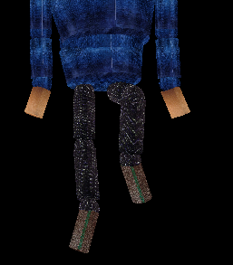

Dancing Man - Part 3
Developed By :
Shivam H Prasad - 110050041
NIshit Bhandari - 110050026
Link to Part 1 Report
Link to Part 2 Report
Introduction :
Dancing Man is a modelling project. This includes modelling a dancing human figure and some other non-living objects like room, furniture, lights etc and then animating them using openGL. This is the third part of the project in which we have modelled human figure animation and made a movie by capturing rendered frames at regular intervals.
Link to keyframes
Implementation :
-
Part 2 finished with modelling of human figure and the entire room scene.
-
In Part 3 user is provided with the ability to capture some frames as keyframes using which all the frames required movie are generated.
-
Using the keyframes al other frames are generated by linearly interpolating between any two successive keyframes.
-
All the required frames are writen to file.
-
On entering the recording mode the frames are drawn one by one and rendered image is saved in ppm format which later is used to generate the video.
Intructions :
-
Press r to capture currently rendered image as a keyframe.
-
Press 5 to toggle between frame capture and playback mode.
-
Press r to interpolate between captured keyframes and generate all the frames.
-
Press D to start the playback and image generation and saving.
-
Goto dance directory and run movieMake script to create movie from captured images.
Interface Settings :
- Press c to initialize the scene or to reset the scene.

- Press o to open the box and O to close it.

- Press q to open the room door and Q to close it.
- Press v to open the almirah and V to close it.

- Press x, X, y, Y, z, Z to make body movements in various directions.
- Press n to enable movement about neck.

- Press 4 or 6 to toggle lights in the scene on/off.

- Press u to plot bezier curve, U to erase bezier curve and C to start camera animation.
- Press s or S to enable movement about left or right shoulder.

- Press l or L to enable movement about left or right elbow.
- Press w or W to enable movement about left or right wrist.
- Press t to enable upper torso movement.

- Press T to enable lower torso movement.

- Press h or H to enable movement about left or right hip.
- Press k or K to enable movement about left or right knee.

- Press a or A to enable movement about left or right ankle.

- Press ESC to quit the program.